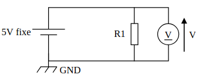
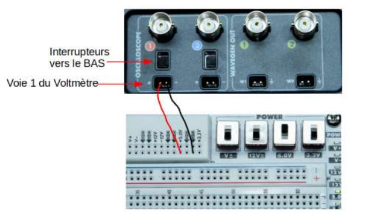

Administrer
- Ce que j'ai fait
R1.04 - fondamentaux des systèmes électronique / R1.05 - Support de transmissionDans le cadre de ce travail, j’ai effectué un montage électronique avec la maquette ADS.

Pour cela, nous avons mis en place une expérimentation en utilisant la maquette. Cet outil nous a permis de mesurer la tension d'une résistance en mode Voltmètre sur Wavegen.
Nous avons notamment effectué les branchements en suivant le schéma.


- Difficultés
J’ai rencontré des difficultés lors du montage de la maquette ADS, notamment pour réaliser correctement les branchements et la prise en main du logiciel Wavegen a également été complexe car il proposait plusieurs mode.
- Ce que j’ai appris
Cette activité m’a permis de comprendre un branchement en fonction d'un schéma.
J’ai appris à effectuer des branchements et en parallèle à utiliser le logiciel waveform car en télécom il sera bequcoup utiliser pour l'étude de signaux.
- Ce que je ferai autrement
Si je devais refaire ce travail, je prendrais davantage de temps pour préparer le montage en amont (schéma, vérification des connexions) et mieux maîtriser le logiciel avant les manipulations, afin d’être plus efficace et éviter de détruire le matériel.
- Ce que j'ai fait
R2.01 - technologie de l'internetDans cette activité, j’ai mis en place une passerelle Linux en utilisant des machines virtuelles. L’objectif était de permettre la communication entre un réseau interne et un réseau externe (Internet).

Pour cela, j’ai configuré une machine Linux disposant de deux interfaces réseau : une connectée au réseau local et une autre connectée à Internet. Cette machine jouait le rôle de passerelle en assurant le routage des paquets entre les deux réseaux.
J’ai également utilisé des commandes réseau (comme dhclient) pour configurer dynamiquement les adresses IP et vérifier la connectivité entre les différentes machines.

- Difficultés
J’ai rencontré des difficultés lors de la configuration des interfaces réseau, notamment pour m’assurer que chaque carte réseau était correctement paramétrée et connectée au bon réseau.
Une mauvaise configuration empêchait la machine de jouer correctement son rôle de passerelle, en particulier lors de l’attribution d’adresse IP ou de l’accès à Internet.
- Ce que j’ai appris
Cette activité m’a permis de comprendre le rôle d’une passerelle dans un réseau et son importance pour permettre la communication entre différents réseaux.
J’ai également appris à configurer des interfaces réseau sous Linux et à utiliser des outils en ligne de commande pour diagnostiquer et résoudre des problèmes de connectivité.
- Ce que je ferai autrement
Si je devais refaire ce travail, je vérifierais plus rigoureusement la configuration de chaque interface réseau et les paramètres de connexion des machines(Proxy, paramètres de connexion, carte réseau...) connectées à la passerelle dès le début. Puis je testerais la connectivité étape par étape afin d’identifier plus rapidement les erreurs.